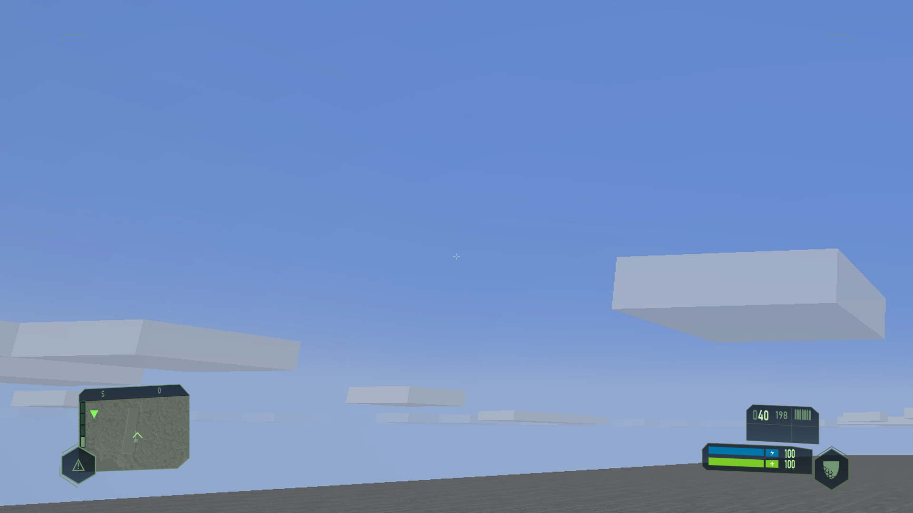
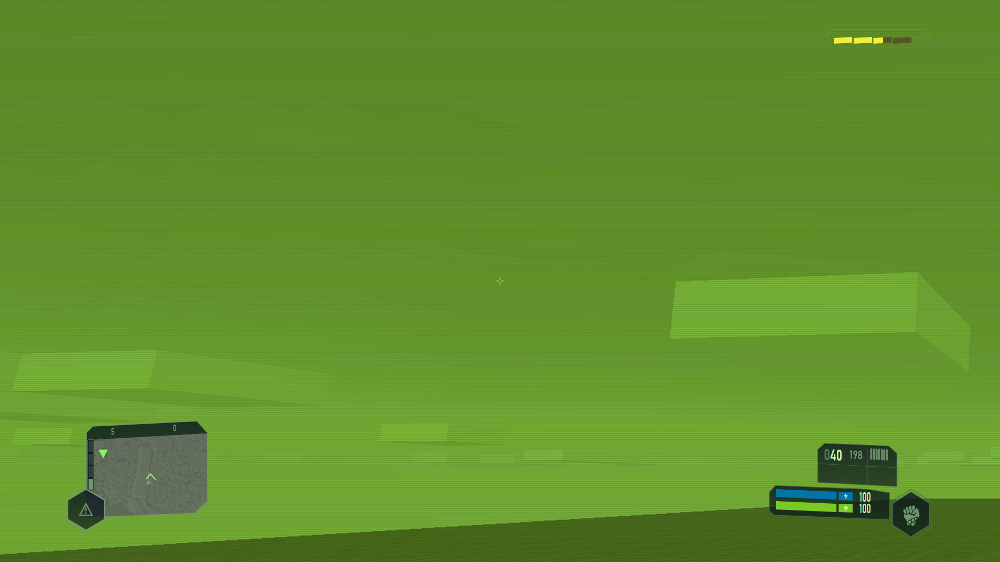
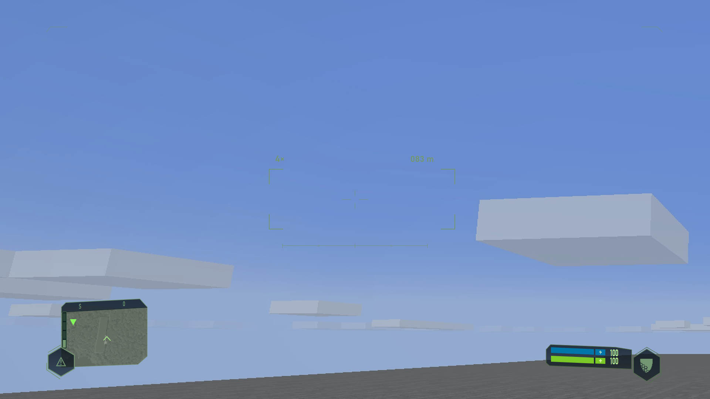

Un HUD classique, deux jauges distinctes.
Disposition mesurée sur la capture du Remastered fournie par l’utilisateur. La géométrie, les icônes déjà validées et la hiérarchie visuelle sont reprises ; la police et les états non observés restent indiqués comme approximatifs.

Armure · énergie 100 · santé 100 · munitions 040 / 198. Les unités de munitions sont simulées, pas des chargeurs calculés par le mod.


Itération 2 : compteurs espacés et alignés sur le panneau, boussole descendue dans son bandeau, jauge de menace élargie et triangle plus lisible. Nouvelle tentative de capture du Remastered, même après passage en fenêtré par l’utilisateur : l’outil reste bloqué avant de produire une image. Les corrections s’appuient sur les références déjà disponibles.
Quatre états à valider




Référence → HUD existant → proposition
Gros plans : les tailles d’affichage ci-dessous sont adaptées pour lire les formes, pas pour comparer les échelles. Les mesures à l’écran figurent dans le rapport.


Ce qui a été réellement observé
Lors de la première étude, le Remastered a été lancé : mode classique coché, difficulté normale, 2560 × 1600, sans bordures. Le processus s’est terminé au chargement de Contact avant l’affichage du HUD. Les fichiers initiaux avaient alors été préservés ou restaurés. Lors de l’itération 2, le jeu s’est rouvert et l’utilisateur l’a passé en fenêtré ; l’outil de capture reste bloqué. Le jeu est laissé ouvert et ce changement volontaire n’est pas annulé. Aucune nouvelle animation du HUD n’est annoncée comme mesurée.


Jumelles : étude secondaire, encore provisoire
Distance, réticule et repères de zoom figurent dans cette étude. Leur géométrie exacte nécessite une capture originale du mode jumelles ; elle n’est pas présentée comme une reproduction validée.
